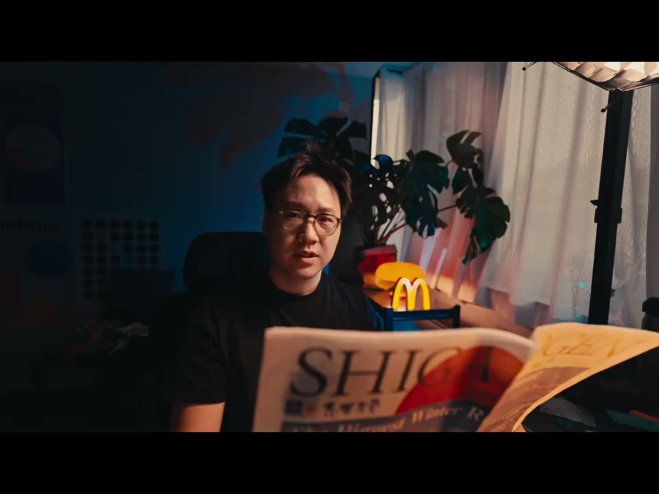
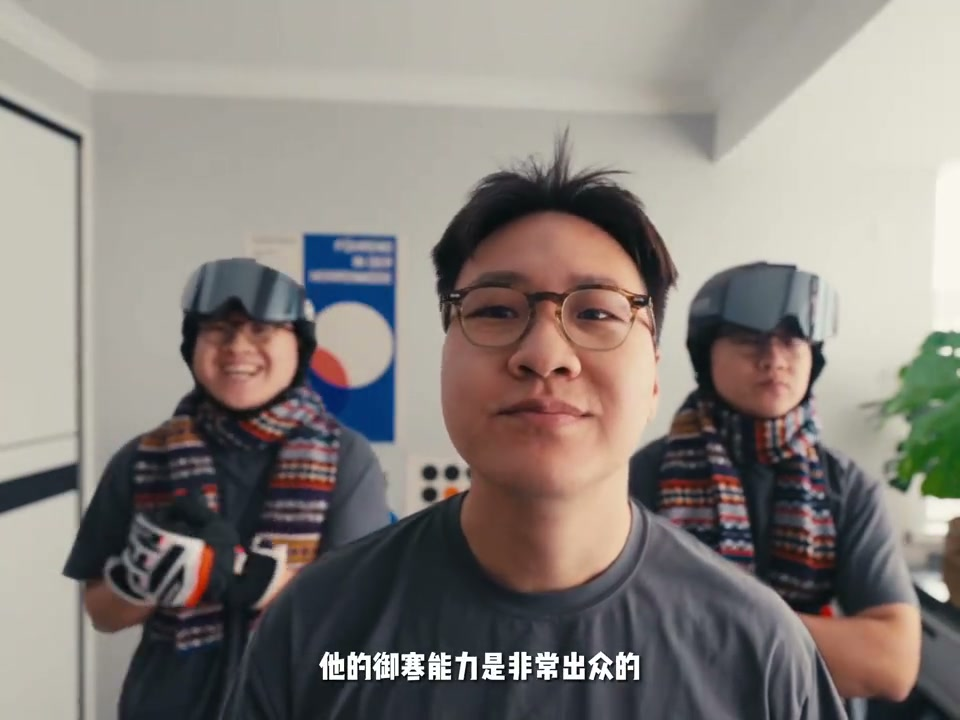
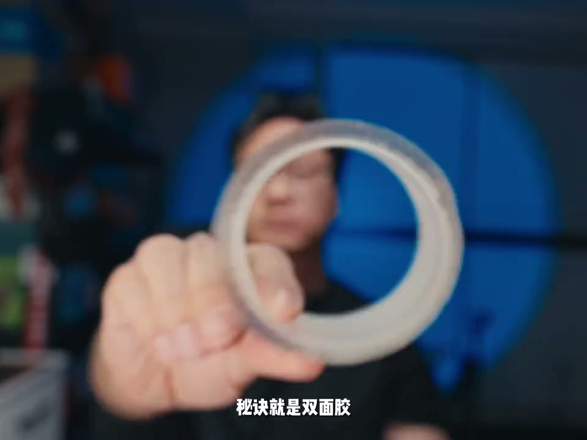
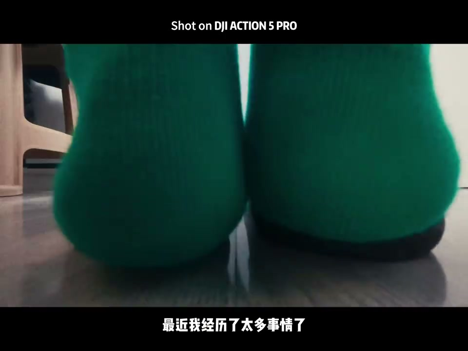

01
中文
我回头看看过去的这一年，我带着它还真的去了很多地方。
EN
Looking back, this little thing really went places with me.
表达提示went places（去了很多地方）

Scene English · Vlog · 运动相机
DJI Action 5 Pro: Cinematic Vlogs from an Action Cam?
🎧 语音讲解
Looking Back Over the Year
情境博主带着上一代Action去了很多地方，记录生活中的美好瞬间。
我回头看看过去的这一年，我带着它还真的去了很多地方。
Looking back, this little thing really went places with me.
表达提示went places（去了很多地方）
日本的最高峰，高大险峻的山脉。
Japan's highest peak and grand, rugged mountain ranges.
表达提示grand mountains（险峻山脉）
这个小东西帮助我记录了很多生活中的美好瞬间。
This little gadget captured countless beautiful moments for me.
表达提示beautiful moments（美好瞬间）
went places（去了很多地方
grand mountains（险峻山脉

What Makes the Action 5 Pro Special
情境升级版DJI Action 5 Pro，除了防水抗噪，还有一个特点——小。
于是我又入手了他的升级版本，全新的DJI Action 5 Pro。
So I upgraded to the all-new DJI Action 5 Pro.
表达提示the upgraded version（升级版）
今天我就来给大家分享如何用DJI Action 5拍摄Vlog，以及拥有更好的电影感。
Today: how to shoot vlogs with it and get a more cinematic feel.
表达提示cinematic feel（电影感）
作为一个运动相机，除了防水、抗噪以外，Action 5还有另外一个特点，那就是小。
Beyond waterproofing and durability, Action 5 is also tiny.
表达提示tiny size（小巧）
基于这个特点，我们可以把相机放在很多有创意的地方，带来更有感官刺激的视觉冲击。
Its size lets you mount it in creative spots for striking visuals.
表达提示creative angles（创意机位）
我之前也带着Action去过很多特别冷的地方滑雪，它的遇寒能力是非常出众的。
I've skied with it in freezing places; its cold tolerance is outstanding.
表达提示cold tolerance（耐寒能力）
所以我在想，是不是也可以把它放在煎鸡蛋的锅里面，看看它抵抗高温的能力。
So what about a frying pan—how hot can it take?
表达提示heat resistance（耐高温）
the upgraded version（升级版
cinematic feel（电影感

Double-Sided Tape Mounting
情境今天要拍Kafka准备早餐的小故事，用双面胶固定相机获得真实动态视角。
今天大概要拍摄的就是Kafka早起准备早餐的一个小故事。
Today's story: Kafka preparing breakfast.
表达提示a breakfast story（早餐故事）
先来一个经典的冰箱视角，这个人人都会的拍摄技巧，有点无聊。
First, the classic fridge angle—everyone shoots this, it's boring.
表达提示fridge angle（冰箱视角）
那怎么样才能拍得与众不同呢？只要用双面胶把Action固定在想要拍摄的物体上面。
How to make it different? Double-sided tape mounts it to any object.
表达提示double-sided tape（双面胶）
我们就可以获得更加真实并且是动态的物体视角。
You get a truer, more dynamic object POV.
表达提示dynamic POV（动态视角）
a breakfast story（早餐故事
fridge angle（冰箱视角

5x Slow Motion
情境把Action调到慢动作模式，不是2倍也不是4倍，是5倍速慢放。
我们把Action调整到慢动作模式。
Switch Action to slow-motion mode.
表达提示slow-motion mode（慢动作模式）
不是两倍，也不是四倍，它是5倍速慢放。
Not 2x, not 4x—it's 5x slow motion.
表达提示5x slow motion（5倍慢放）
相机不能直接放进锅里，所以我们做一个简易的道具。
The camera can't go straight in the pan, so we make a simple prop.
表达提示a simple prop（简易道具）
slow-motion mode（慢动作模式
5x slow motion（5倍慢放

My 2024 Story
情境博主讲述2024年的故事：离职、创业、自媒体、伤病，很多第一次。
给大家讲一下我的故事吧，最近我经历的事情太多了。
Let me tell my story—so much has happened lately.
表达提示so much happened（经历太多）
先是离职领了大礼包，然后自己注册了个小公司。
I left my job with a severance package, then registered a small company.
表达提示severance package（离职大礼包）
搞自媒体，粉丝突破了一万，然后顺手签了MCN。
My self-media hit 10k followers, then I signed with an MCN.
表达提示10k followers（粉丝过万）
最后脚踝受大伤，在家躺了至少半个月。
Then a bad ankle injury kept me home for half a month.
表达提示ankle injury（脚踝受伤）
2024年对我来说真的很难评价，每个人都会经历很多个第一次。
2024 was hard to judge—everyone hits many firsts.
表达提示many firsts（很多第一次）
但同时又很宝贵，它意味着在这个过程中我们是有成长的。
Yet they're precious; they mean we're growing.
表达提示we are growing（我们在成长）
so much happened（经历太多
severance package（离职大礼包

The Lesson of Persistence
情境先做出一个差劲的东西，再慢慢把它变好；坚持每一天的小习惯。
可能有人会说你好厉害，但一开始我也很傻。
Some call me impressive, but I started clueless too.
表达提示started clueless（一开始很傻）
我只是深知一个道理：迈出第一步是最重要的，先做出一坨像狗屎一样的东西，再慢慢把它变好。
I just know one truth: the first step matters most—make something crappy, then improve it.
表达提示the first step（第一步）
不管发生什么事情都要坚持下去。
Whatever happens, keep going.
表达提示keep going（坚持下去）
坚持每天吃早餐，坚持每天运动，坚持每天学习一个新的技能。
Eat breakfast daily, exercise daily, learn a new skill daily.
表达提示daily habits（每日习惯）
每一分钟、每一秒都很重要，都会在未来的某一天给你回报。
Every minute matters and pays you back someday.
表达提示pays you back（给你回报）
started clueless（一开始很傻
the first step（第一步
说Action特点
说双面胶固定
说5倍慢动作
说冰箱视角升级
说坚持的道理
双面胶让视角更活。
5倍慢放更惊艳。
运动相机也能拍日常。
先做出烂东西再变好。
坚持日常终有回报。